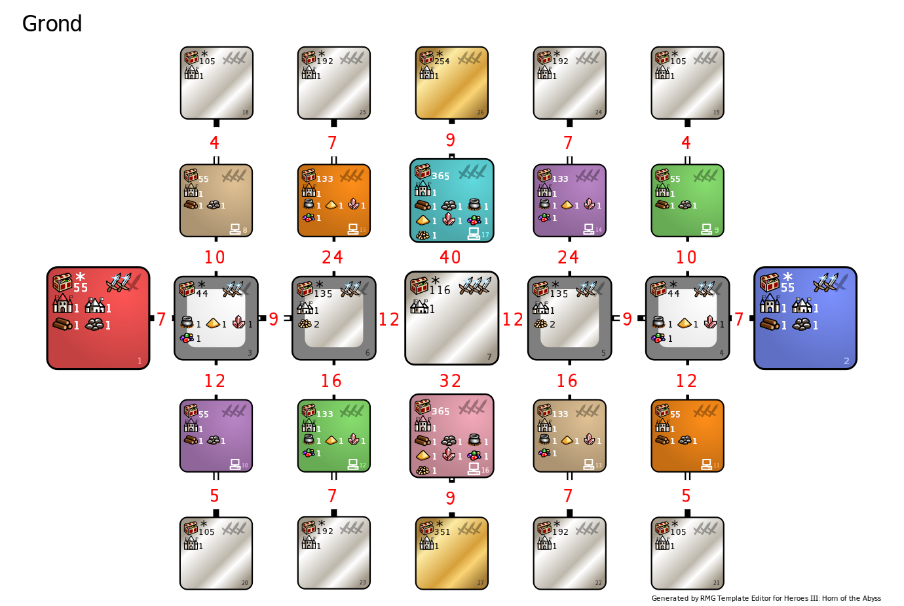

Are you strong enough to walk the path to the other human?
There's 1 path between Red and Blue and if you don't hurry, strong AI armies will get in your way.
Named after a certain fight in one WoG map ("Gauntlet of the Grond" in "Swords of Night and Day"),
which was probably named after Morgoth's hammer from Tolkien's Silmarillion.
Fire and Water are banned, but you can buy them in your Conflux village if you want.
By Warzyw
Settings

Technical datails that you can get from the Template Editor
| Value | Zones | Min | Max | Density | Min | Max | Density | Min | Max | Density |
|---|---|---|---|---|---|---|---|---|---|---|
| 44 | White zones | 2000 | 3500 | 5 | 1500 | 2500 | 8 | 1000 | 2000 | 10 |
| 55 | 1, 2, 8, 9, 10, 11 | 10000 | 15000 | 1 | 3000 | 6000 | 6 | 500 | 3000 | 9 |
| 105 | 18, 19, 20, 21 | 11000 | 15200 | 2 | 15200 | 18900 | 2 | 18900 | 25900 | 2 |
| 116 | 7 | 7000 | 11900 | 5 | 3000 | 8000 | 8 | 1000 | 4000 | 10 |
| 133 | 12, 13, 14, 15 | 15000 | 20000 | 1 | 10000 | 15000 | 6 | 3000 | 6000 | 9 |
| 135 | 5, 6 | 7000 | 15000 | 6 | 3000 | 8000 | 8 | 1000 | 4000 | 10 |
| 192 | 22, 23, 24, 25 | 18900 | 25900 | 2 | 25900 | 36800 | 2 | 36800 | 47700 | 2 |
| 254 | 26 | 25900 | 36800 | 2 | 36800 | 47700 | 2 | 47700 | 59500 | 2 |
| 351 | 27 | 36800 | 47700 | 2 | 47700 | 59500 | 2 | 59500 | 100000 | 2 |
| 365 | 16, 17 | 20000 | 30000 | 4 | 15000 | 20000 | 8 | 10000 | 15000 | 10 |
| Zone | Terrain |
|---|---|
| Human zones | Same as Town |
| 3, 4, 8, 9, 10, 11 | Grass |
| 5, 6, 12, 13, 14, 15 | Highlands |
| 7, 16, 17 | Swamp |
| 18, 19, 20, 21, 22, 23, 24, 25, 26, 27 | Sand |
| Zone | Town types |
|---|---|
| 7 | Only Cove |
| 27 | Only Conflux |
| Zone | Town rules |
|---|---|
| Human zones | neutral town 1 has same type as neutral town 1 of zone 27 |
| 6 | All towns have same type as neutral town 1 of zone 5 |
| 18 | All towns have same type as player towns of zone 8 |
| 19 | All towns have same type as player towns of zone 9 |
| 20 | All towns have same type as player towns of zone 10 |
| 21 | All towns have same type as player towns of zone 11 |
| 22 | All towns have same type as player towns of zone 13 |
| 23 | All towns have same type as player towns of zone 12 |
| 24 | All towns have same type as player towns of zone 14 |
| 25 | All towns have same type as player towns of zone 15 |
| 26 | All towns have same type as player towns of zone 17 |
| Rule Type | Object | Value | Frequency | Max per Zone | Max on Map |
|---|---|---|---|---|---|
| Disable | Town Gate |
| Rule Type | Object | Value | Frequency | Max per Zone |
|---|---|---|---|---|
| Enable / Edit | Dwellings of level 2 | default | 200 | 2 |
| Enable / Edit | Dwellings of level 3 | default | 200 | 2 |
| Enable / Edit | Dwellings of level 4 | default | 200 | 2 |
| Enable / Edit | Dwellings of level 5 | default | 200 | 1 |
| Enable / Edit | Dwellings of level 6 | default | 200 | 1 |
| Disable | Pandora’s Box with creatures of any kind | |||
| Disable | any creature bank | |||
| Enable / Edit | Ruins | default | default | default |
| Enable / Edit | Black Tower | default | default | default |
| Enable / Edit | Medusa Stores | default | default | default |
| Disable | Campfire | |||
| Disable | Treasure Chest | |||
| Disable | Random Resource | |||
| Disable | any of Wood/Ore/Mercury/Sulfur/Crystal/Gem/Gold |
| Rule Type | Object | Value | Frequency | Max per Zone |
|---|---|---|---|---|
| Enable / Edit | Dwellings of level 2 | default | 200 | 2 |
| Enable / Edit | Dwellings of level 3 | default | 200 | 2 |
| Enable / Edit | Dwellings of level 4 | default | 200 | 2 |
| Enable / Edit | Dwellings of level 5 | default | 200 | 1 |
| Enable / Edit | Dwellings of level 6 | default | 200 | 1 |
| Disable | Pandora’s Box with creatures of any kind | |||
| Disable | any creature bank | |||
| Enable / Edit | Ruins | default | default | default |
| Enable / Edit | Black Tower | default | default | default |
| Enable / Edit | Medusa Stores | default | default | default |
| Disable | any of Wood/Ore/Mercury/Sulfur/Crystal/Gem/Gold | |||
| Disable | Random Resource | |||
| Disable | Treasure Chest | |||
| Disable | Campfire |
| Rule Type | Object | Value | Frequency | Max per Zone |
|---|---|---|---|---|
| Disable | Griffin Conservatory | |||
| Disable | Dragon Fly Hive | |||
| Disable | Pirate Cavern | |||
| Disable | Red Tower | |||
| Disable | Ivory Tower | |||
| Disable | Experimental Shop | |||
| Disable | Wolf Raider Picket | |||
| Disable | Dragon Utopia | |||
| Enable / Edit | Dwellings of level 1 | default | 200 | 2 |
| Enable / Edit | Dwellings of level 2 | default | 200 | 2 |
| Enable / Edit | Dwellings of level 3 | default | 200 | 2 |
| Enable / Edit | Dwellings of level 4 | default | 200 | 1 |
| Enable / Edit | Dwellings of level 5 | default | 200 | 1 |
| Disable | Pandora’s Box with creatures of any kind | |||
| Disable | Dwarven Treasury | |||
| Disable | Naga Bank | |||
| Disable | Mansion | |||
| Disable | Spit | |||
| Enable / Edit | Cyclops Stockpile | default | 200 | default |
| Enable / Edit | Imp Cache | default | 200 | default |
| Enable / Edit | Churchyard | default | 200 | default |
| Disable | Black Tower | |||
| Disable | Ruins | |||
| Disable | Medusa Stores | |||
| Disable | Crypt | |||
| Disable | any of Wood/Ore/Mercury/Sulfur/Crystal/Gem/Gold | |||
| Disable | Random Resource | |||
| Disable | Treasure Chest | |||
| Disable | Campfire |
| Rule Type | Object | Value | Frequency | Max per Zone |
|---|---|---|---|---|
| Disable | Griffin Conservatory | |||
| Disable | Dragon Fly Hive | |||
| Disable | Pirate Cavern | |||
| Disable | Red Tower | |||
| Disable | Ivory Tower | |||
| Disable | Experimental Shop | |||
| Disable | Wolf Raider Picket | |||
| Disable | Dragon Utopia | |||
| Enable / Edit | Dwellings of level 1 | default | 200 | 2 |
| Enable / Edit | Dwellings of level 2 | default | 200 | 2 |
| Enable / Edit | Dwellings of level 3 | default | 200 | 2 |
| Enable / Edit | Dwellings of level 4 | default | 200 | 1 |
| Enable / Edit | Dwellings of level 5 | default | 200 | 1 |
| Disable | Pandora’s Box with creatures of any kind | |||
| Disable | Naga Bank | |||
| Disable | Mansion | |||
| Disable | Dwarven Treasury | |||
| Disable | Spit | |||
| Enable / Edit | Cyclops Stockpile | default | 200 | default |
| Enable / Edit | Imp Cache | default | 200 | default |
| Enable / Edit | Churchyard | default | 200 | default |
| Disable | Black Tower | |||
| Disable | Ruins | |||
| Disable | Medusa Stores | |||
| Disable | Crypt | |||
| Disable | any of Wood/Ore/Mercury/Sulfur/Crystal/Gem/Gold | |||
| Disable | Treasure Chest | |||
| Disable | Random Resource | |||
| Disable | Campfire |
| Rule Type | Object | Value | Frequency | Max per Zone |
|---|---|---|---|---|
| Disable | any creature bank | |||
| Enable / Edit | Naga Bank | default | default | default |
| Enable / Edit | Dwarven Treasury | default | default | default |
| Enable / Edit | Spit | default | default | default |
| Enable / Edit | Mansion | default | default | default |
| Disable | any warehouse | |||
| Disable | Windmill | |||
| Disable | Mystical Garden | |||
| Disable | Wagon | |||
| Disable | Lean To | |||
| Enable / Edit | Warehouse of Gold | default | 200 | default |
| Disable | any of Wood/Ore/Mercury/Sulfur/Crystal/Gem/Gold | |||
| Disable | Random Resource | |||
| Disable | Treasure Chest | |||
| Disable | Campfire | |||
| Disable | Spell Scroll — any level | |||
| Disable | Pandora’s Box with spells — any kind | |||
| Disable | Pandora’s Box with experience — any amount | |||
| Disable | Random Treasure Artifact | |||
| Disable | Random Minor Artifact | |||
| Disable | Random Major Artifact | |||
| Disable | Random Relic | |||
| Disable | Hovel (Peasant Dwelling) | |||
| Disable | Thatched Hut (Halfling Dwelling) | |||
| Disable | Alehouse (Leprechaun dwelling) | |||
| Disable | Boar Glen (Boar Dwelling) | |||
| Disable | Hidden Cavern (Rogue Dwelling) | |||
| Disable | Nomad Tent (Nomad Dwelling) | |||
| Disable | Tomb of Curses (Mummy Dwelling) | |||
| Enable / Edit | Troll Bridge (Troll Dwelling) | default | 200 | no limit |
| Enable / Edit | Wineyard (Satyr dwelling) | default | 200 | no limit |
| Enable / Edit | Ziggurat (Fangarm dwelling) | default | 200 | no limit |
| Enable / Edit | Treetop Tower (Sharpshooter Dwelling) | default | 100 | default |
| Disable | Enchanter’s Hollow (Enchanter Dwelling) | |||
| Enable / Edit | Pandora’s Box with spells, level 1 to 5, school(s): fire | 10000 | 200 | 3 |
| Disable | Pandora’s Box with gold — any amount |
| Rule Type | Object | Value | Frequency | Max per Zone |
|---|---|---|---|---|
| Disable | every object | |||
| Enable / Edit | Pandora’s Box with creatures of level 1 | default | default | default |
| Enable / Edit | Pandora’s Box with creatures of level 2 | default | default | default |
| Enable / Edit | Pandora’s Box with creatures of level 3 | default | default | default |
| Enable / Edit | Pandora’s Box with creatures of level 4 | default | default | default |
| Rule Type | Object | Value | Frequency | Max per Zone |
|---|---|---|---|---|
| Disable | every object | |||
| Enable / Edit | Pandora’s Box with creatures of level 1 | default | default | default |
| Enable / Edit | Pandora’s Box with creatures of level 2 | default | default | default |
| Enable / Edit | Pandora’s Box with creatures of level 3 | default | default | default |
| Enable / Edit | Pandora’s Box with creatures of level 4 | default | default | default |
| Enable / Edit | Pandora’s Box with creatures of level 5 | default | default | default |
| Enable / Edit | Pandora’s Box with creatures of level 6 | default | default | default |
| Rule Type | Object | Value | Frequency | Max per Zone |
|---|---|---|---|---|
| Disable | every object | |||
| Enable / Edit | Pandora’s Box with creatures of level 1 | default | default | default |
| Enable / Edit | Pandora’s Box with creatures of level 2 | default | default | default |
| Enable / Edit | Pandora’s Box with creatures of level 3 | default | default | default |
| Enable / Edit | Pandora’s Box with creatures of level 4 | default | default | default |
| Enable / Edit | Pandora’s Box with creatures of level 5 | default | default | default |
| Enable / Edit | Pandora’s Box with creatures of level 6 | default | default | default |
| Enable / Edit | Pandora’s Box with creatures of level 7 | default | default | default |
| Rule Type | Object | Value | Frequency | Max per Zone |
|---|---|---|---|---|
| Disable | every object | |||
| Enable / Edit | Pandora’s Box with creatures of level 1 | default | default | default |
| Enable / Edit | Pandora’s Box with creatures of level 2 | default | default | default |
| Enable / Edit | Pandora’s Box with creatures of level 3 | default | default | default |
| Enable / Edit | Pandora’s Box with creatures of level 4 | default | default | default |
| Enable / Edit | Pandora’s Box with creatures of level 5 | default | default | default |
| Enable / Edit | Pandora’s Box with creatures of level 6 | default | default | default |
| Enable / Edit | Pandora’s Box with creatures of level 7 | default | default | default |
| Enable / Edit | Pandora’s Box with creatures: Faerie Dragons | default | default | default |
| Enable / Edit | Pandora’s Box with creatures: Crystal Dragons | default | default | default |
| Enable / Edit | Pandora’s Box with creatures: Rust Dragons | default | default | default |
| Enable / Edit | Pandora’s Box with creatures: Azure Dragons | default | default | default |